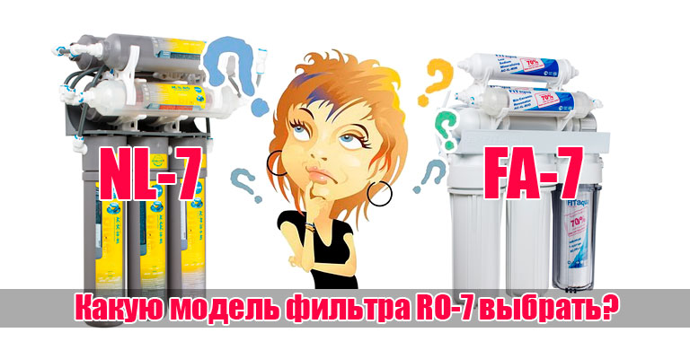

Если, выбирая фильтр для воды, вы остановились на системе RO-7, то эта статья поможет узнать о товаре больше, а также подскажет, какую модель фильтра RO-7 выбрать, чтобы сэкономить.
Фильтр RO-7 создает непреодолимое препятствие для загрязнений. При разработке многоступенчатой системы фильтрации, инженеры Bluefilters обратили особое внимание на насыщение воды минералами. После очистки вода проходит через специальные восстанавливающие блоки.
Проходя через минерализатор, вода обогащается полезными солями.
Система очистки Bluefilters компактно встраивается под мойку на кухне. Для удобства выводится отдельный краник питьевой воды. Благодаря своему компактному и функциональному дизайну, фильтрационную систему можно установить даже под мойку, где на первый взгляд нет лишнего места.
Вода после семи ступеней очистки идеально подходит для питья в сыром виде. Чистая вода продлит срок службы бытовой техники.
Модельный ряд фильтров RO-7
Система RO-7 выпускается в двух моделях FitAqua (FA) и NewLine (NL). И та, и другая имеют помимо фильтрующих элементов восстанавливающие блоки – минерализатор и блок насыщения кислородом.
В чем же сходства и различия систем NL-7 и FA-7?
Фильтры NL-7 и FA-7:Различия фильтров NL-7 и FA-7:
Система очистки питьевой воды RO-7 от Bluefilters – это элегантность и простота решения для квартиры, коттеджа и офиса.
Цены на фильтры можно узнать пройдя по этим ссылкам - фильтр FA-7 стоимость и фильтр NL-7 стоимость.
Изготовитель: Amii Sp. z o.o., Poland, ul. Grabinska 23, 92-780 Lodz.
Импортер, официальный представитель, официальный сервисный центр в Беларуси: ООО «Блюфильтерс», Беларусь, Минск, ул. Громова 28-320.